IRON WRECK — v7.6
11 veículos selecionáveis. Agora o carro de sorvete Clown Cream Carnage usa o GLB enviado pelo usuário e possui o ataque Carnaval de Casquinhas, com cinco projéteis e efeitos novos.
As imagens a seguir são prévias técnicas dos modelos anteriores, não capturas do jogo em execução. A prévia do carro de sorvete ainda mostra o desenho antigo; o modelo v7.6 completo está no jogo.
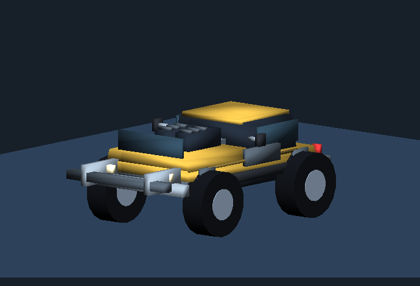
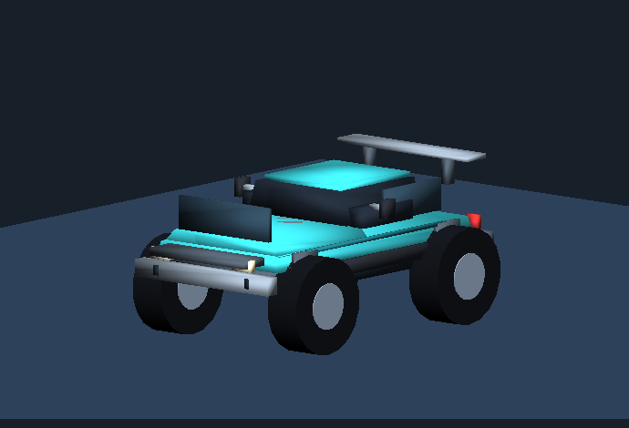
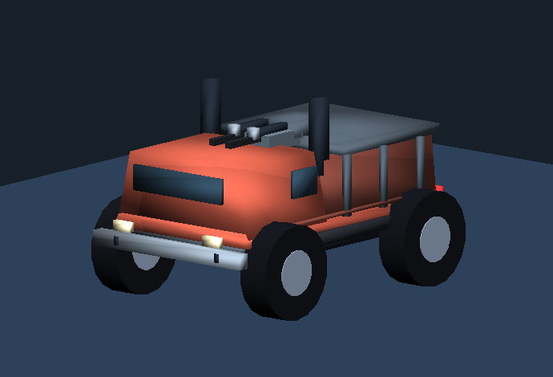
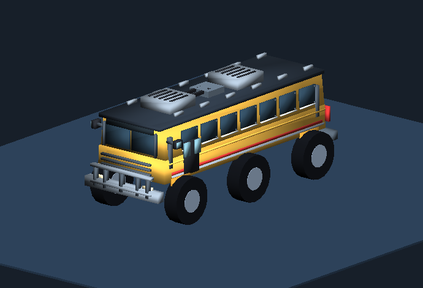
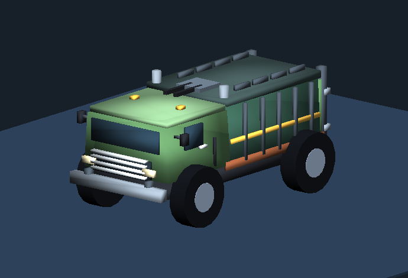
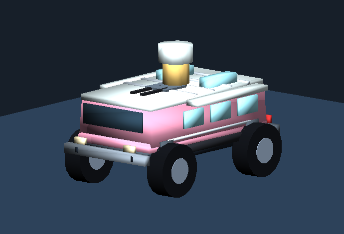
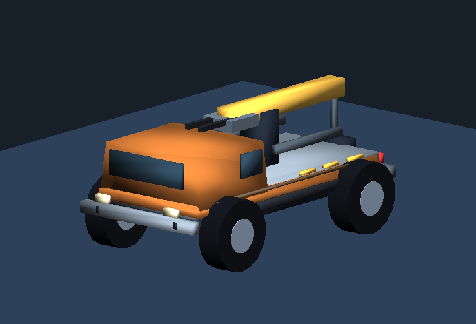
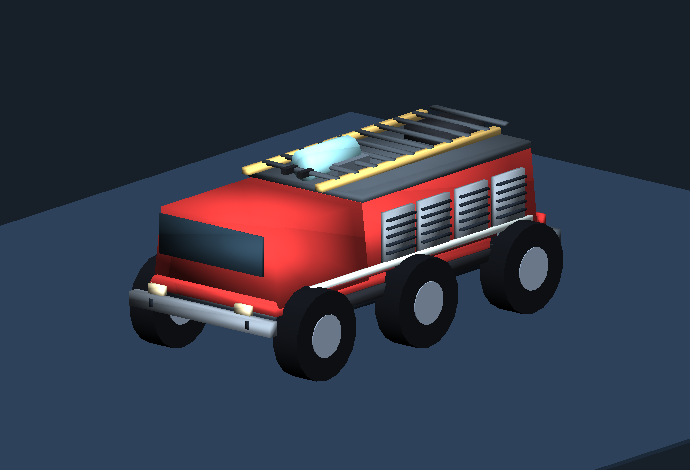
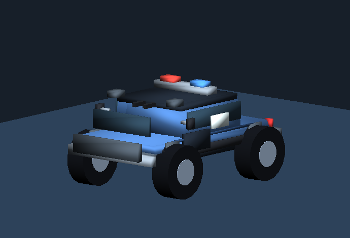
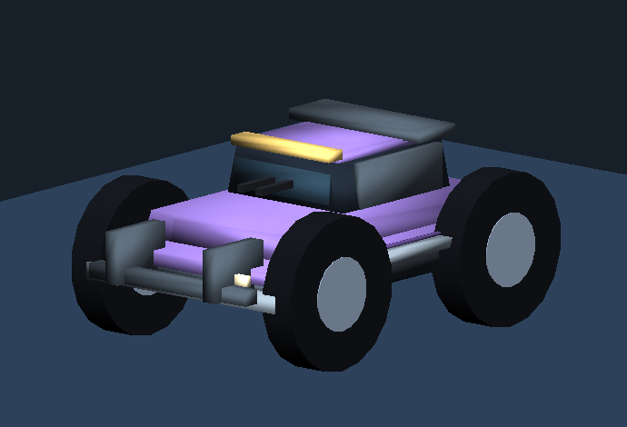
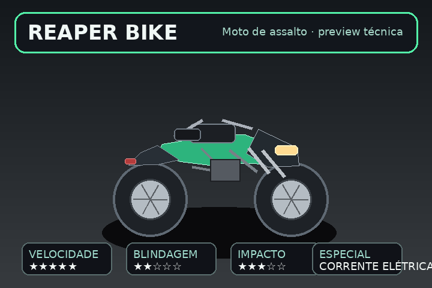
Cenários
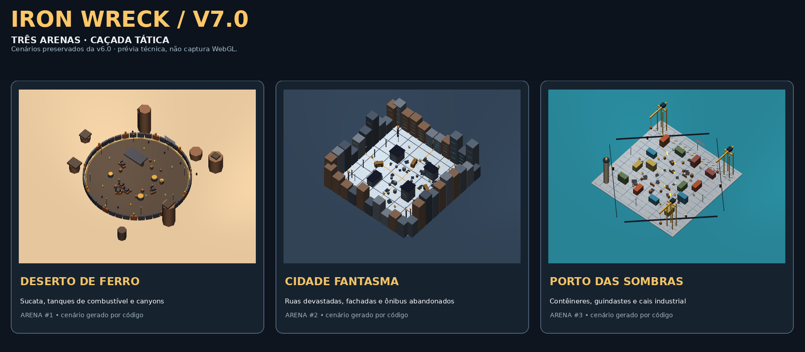
Deserto de Ferro · Cidade Fantasma · Porto das Sombras.